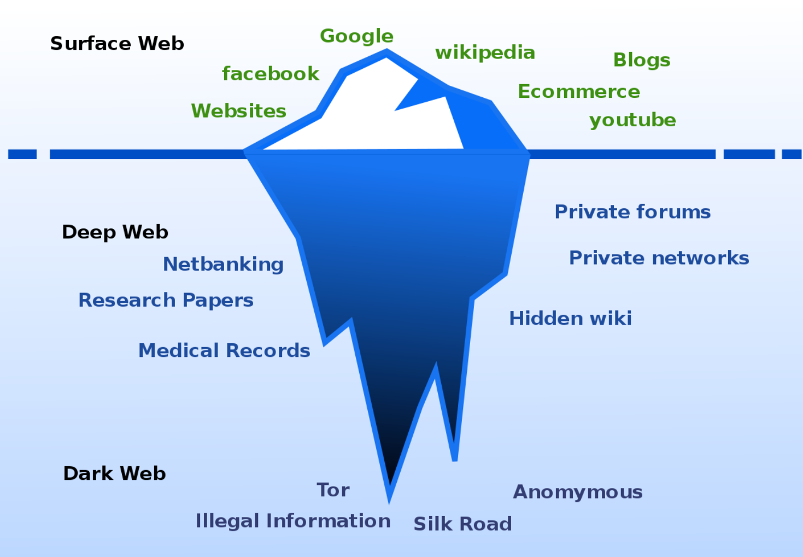

Introduction¶
This course will provide you an insight into the darkweb, and exactly what it’s used for, by both the good guys and the bad guys. We’ll explore the use of TOR for privacy, the role the darkweb plays in intelligence gathering (for both law enforcement and threat intelligence companies), and get you exploring some safe areas of TOR.
Before we dive into the blackness of the darkweb (it’s not all bad though!) we first need to explore how the internet is split up into three regions known as;

The Clear Web
The Deep Web
The Dark Web.
{kind=link}
What is the Clear Web?¶
This part of the internet has many names, such as; The Clear Web, Surface Web, and Indexed Web. These are the sites that you access daily, such as Facebook, Google, YouTube, Reddit, and so on. These websites and web pages are indexed on a mass scale by search engines such as Google and Bing, which is why we can find them when using search engines.
The Clear Web consists of legal sites that are generally designed for use by the public, and tend not to have obscure methods of gaining access, such as a special key or IP whitelisting.
What is the Deep Web?¶
The Deep Web, also known as the Underground Web or Invisible Web, is the part of the Internet that isn’t indexed by conventional search engines, such as Google or Bing. Either the site owners have prevented crawlers from indexing their site, or they have implemented access controls to only allowed their intended audience to access the site. The Deep Web is huge.
Are the Dark Web and the Deep Web the same thing?¶
No! They’re different. Log in to your Amazon account – you’re on the Deep Web. Sign in to your Facebook – you’re on the Deep Web. These are web pages that are not indexed or publicly available, imagine if anyone could search on Google and find your private Amazon page with your order history, payment details, and more private information. Not everything on the Deep Web is illegal or shady, it’s just private pages that only certain people should have access to. Other examples include private forums, private membership pages, and online banking.
What is the Dark Web?¶
A section of the internet that is utilized for anonymity, illegal operations, intelligence gathering, and more. Whilst some search engines do exist for the Dark Web, sites are usually hidden, and you’ll need to know the exact URL in order to find them. Sites on the Dark Web use the Top Level Domain (TLD) ‘.onion’ as opposed to Clear Web TLDs such as ‘.com’ or ‘.co.uk’.
is it illegal to visit the Dark Web?¶
Regardless of your geographical location, it is not illegal to visit the Dark Web. Whilst accessing the Dark Web isn’t illegal, there is a large amount of illegal content, and viewing this or interacting with it could substitute an illegal offense.
Why is it Useful?¶
The Dark Web has a number of benefits, and not just for cybercriminals. When considering its legitimate use, there are a number of obvious benefits.
Note
Threat Intelligence Collection
A large amount of useful intelligence can be gathered from the dark web, such as malware and vulnerabilities for sale (which can help researchers and companies to fix these holes before they’re exploited on a mass scale), uncovering planning of cyberattacks on private forums (this intelligence can be used to inform the target organization so they can implement defenses), tracking threat actors online (attempting to uncover the identities of advanced hackers so they can be arrested for their crimes), and much more.
Note
Law Enforcement Operations
Using the dark web, law enforcement officers can infiltrate private sites, forums, and marketplaces in order to collect evidence that would be used in the case of legal prosecution against individuals involved in illegal activity. By joining the criminals in cyberspace, police officers and other law enforcement units are able to take the fight straight to the bad guys, and work to shut down sites, collect intelligence, and disrupt criminal operations.
Note
Freedom of Speech
In some countries the government works to closely monitor all communications and remove any that they do not agree with, an act called censorship. Using TOR, individuals from these countries can bypass internet restrictions such as website blocking, or get messages out to the wider world, letting them know what’s happening in their location.
Note
Privacy
Whilst TOR does not provide 100% anonymity, it does provide more security in terms of privacy than using a normal browser such as Chrome. Due to the way TOR operates, your IP will be masked by a number of nodes, working like a VPN to hide your true address.